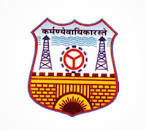

S.V. Polytechnic College Syllabus
Home
Computer Programming
Scripting Languages
Data Structures
Computer System ORGA.
ALGORITHMS
Personality Development
PROFESSIONAL DEVELOPMENT
The language of choice will be C. The focus will be on problem solving and problem where these ideas
can be applied. The main focus of the class will to take examples of problems where these ideas can
be employed.
Unit 1: Professional and Social Ethics
Professional ethics, its need and importance, general code of ethics for engineers, ethical issues for
engineers.
Need and importance of social skills, social skills for better group performance, important social skills
such as social perceptiveness, coordination, negotiation, persuasion etc.
Unit 2:Lifelong learning and Self-directed Learning
Lifelong learning, its examples, self-directed learning, its examples, important steps in lifelong
learning.
Need for planning self-directed learning, planning self-directed learning plan, examples
Unit 3: Career Planning
Importance of career planning, major career opportunities in concerned branch of engineering ,
study of the important career opportunities regarding qualification, knowledge, skills, experience
required for them, role of personal factors like personal life style, interest areas, desires, personal
preferences in career planning.
Identification and detailing of important career opportunities in relation to branch of diploma,
identification and detailing of important self-personal factors and self-personal preferences,
development of self-career plan.ps
Unit 4: Industrial Visits
Necessity of exposure to environment and practices, lectures by industry experts.
Importance of Students industrial visits, learning through observing real life industrial systems,
planning and organizing the industrial visits.
Unit 5: CV, Resume, Bio-data and Interview
Need of presenting self for employment, salient features and formats of bio-data, CV, resume,
comparison of the three for their merits, limitations and specific uses, study of cases and examples of
bio-data, CV, resume and covering letter by all students for self of for the given cases.
Importance of employment related interviews, purpose of interview, dress code, body language and
posture of interviewee, do s and don ts for interviews, interview checklist, practice of facing employment
related interviews for all students.
Unit 6: Group Discussion
Need and importance of group discussion in professional work, ideal group discussion and skills
needed to effectively participate in group discussion, practice of group discussion skills.